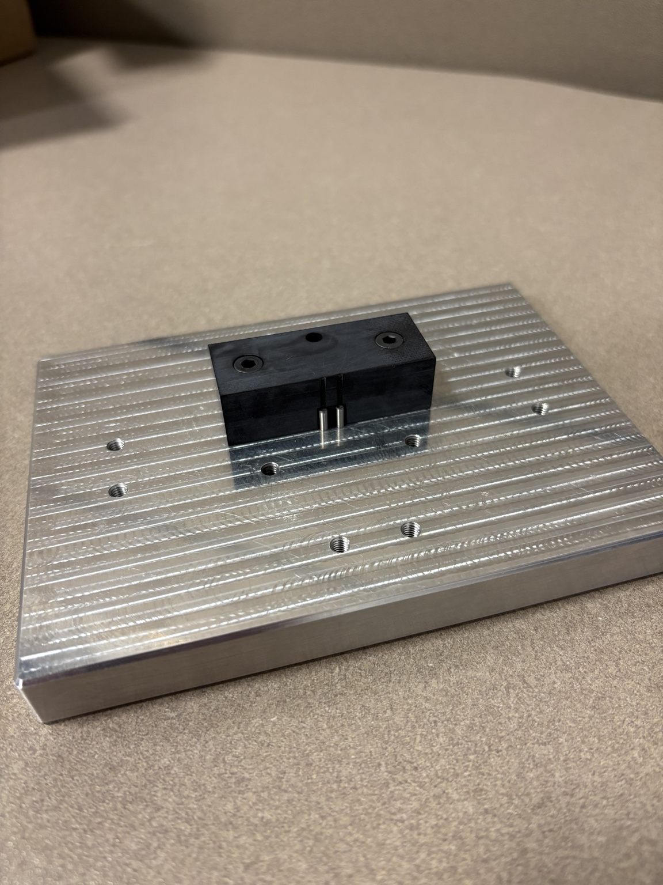
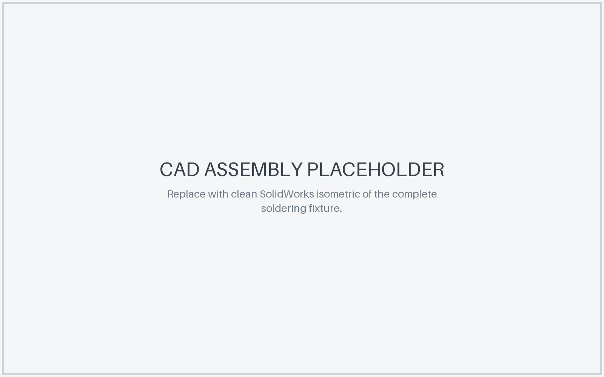
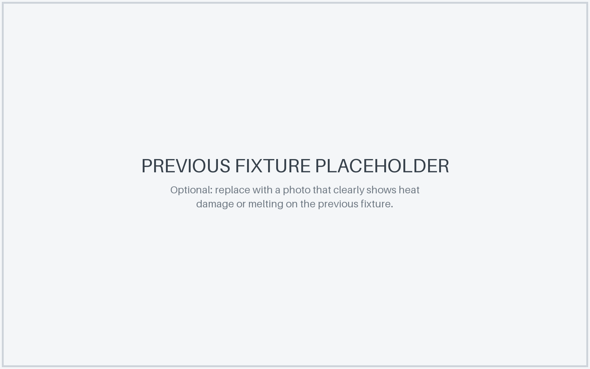
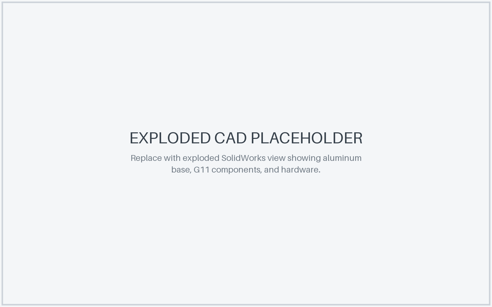
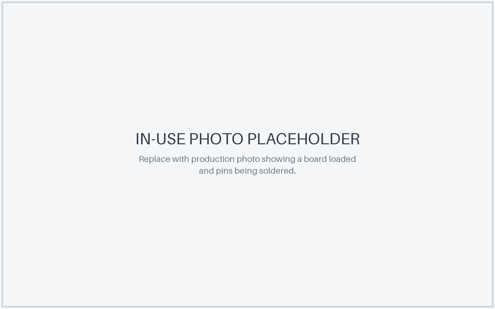

Fixture Design • Material Selection • Production
Production Soldering Fixture Redesign
Redesigned a production fixture used to locate a small electronic assembly and its pins during soldering, replacing a previous fixture that degraded under repeated exposure to soldering heat.


01
Problem
The existing production fixture was repeatedly exposed to heat during pin soldering and was beginning to melt and deform. Because the fixture establishes the position of the board and pins, continued degradation could reduce consistency and shorten the useful life of the tooling.
The redesign needed to preserve the locating function of the fixture while using materials better suited for repeated production soldering.

02
Design Approach
I redesigned the fixture as a rigid machined assembly with a large aluminum base and smaller replaceable G11 components around the critical soldering and locating region.
The fixture geometry positions the assembly and constrains the pins during soldering while keeping the working area accessible to the operator.


03
Material Selection
Aluminum was selected for the base to provide a rigid, durable platform for repeated production use. G11 glass-epoxy laminate was used for the smaller fixture components surrounding the soldering interface because it provides good thermal resistance and electrical insulation.
Separating the fixture into an aluminum base and smaller G11 details also keeps the high-temperature material concentrated where it is most useful.

04
Final Fixture
The final fixture combines the machined aluminum base, G11 locating components, and mechanical hardware into a robust assembly intended for repeated production use.
I completed the mechanical design and had the components machined, then assembled the finished fixture for production use.
05
In Use
The fixture is intended to hold the board and pins in a repeatable position while the operator completes the soldering process. A production-use photo will make this function immediately clear once one is available.

06
Result
The redesign replaced the heat-sensitive fixture with a machined aluminum and G11 assembly intended to withstand repeated soldering cycles while maintaining the required board and pin location.
The project required balancing production usability, thermal durability, material selection, machinability, and precise fixture geometry in a compact design.